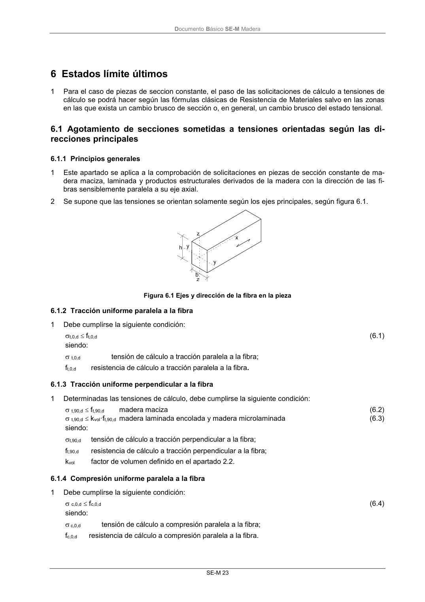

DB-SE-M · 6 Estados límite últimos · 6.1.1 Principios generales · 6.1.2 Tracción uniforme paralela a la fibra · 6.1.3 Tracción uniforme perpendicular a la fibra · 6.1.4 Compresión uniforme paralela a la fibra · versión 2019-12-20
SHA256: 26b5819839ebfda78b0b119c5e76a0a37773b0d763c05688541870075df93718 · página física 29 de 132 · métodos de encabezado
solo si están cotejados.
Formatos: Markdown · JSON de bloques · PDF p. 29 · imagen PNG
Documento Básico SE-M Madera SE-M 23 6 Estados límite últimos 1 Para el caso de piezas de seccion constante, el paso de las solicitaciones de cálculo a tensiones de cálculo se podrá hacer según las fórmulas clásicas de Resistencia de Materiales salvo en las zonas en las que exista un cambio brusco de sección o, en general, un cambio brusco del estado tensional. 6.1 Agotamiento de secciones sometidas a tensiones orientadas según las di- recciones principales 6.1.1 Principios generales 1 Este apartado se aplica a la comprobación de solicitaciones en piezas de sección constante de ma- dera maciza, laminada y productos estructurales derivados de la madera con la dirección de las fi- bras sensiblemente paralela a su eje axial. 2 Se supone que las tensiones se orientan solamente según los ejes principales, según figura 6.1. Figura 6.1 Ejes y dirección de la fibra en la pieza 6.1.2 Tracción uniforme paralela a la fibra 1 Debe cumplirse la siguiente condición: t,0,d ft,0,d (6.1) siendo: t,0,d tensión de cálculo a tracción paralela a la fibra; ft,0,d resistencia de cálculo a tracción paralela a la fibra. 6.1.3 Tracción uniforme perpendicular a la fibra 1 Determinadas las tensiones de cálculo, debe cumplirse la siguiente condición: t,90,d ft,90,d madera maciza (6.2) t,90,d kvol·ft,90,d madera laminada encolada y madera microlaminada (6.3) siendo: t,90,d tensión de cálculo a tracción perpendicular a la fibra; ft,90,d resistencia de cálculo a tracción perpendicular a la fibra; kvol factor de volumen definido en el apartado 2.2. 6.1.4 Compresión uniforme paralela a la fibra 1 Debe cumplirse la siguiente condición: c,0,d fc,0,d (6.4) siendo: c,0,d tensión de cálculo a compresión paralela a la fibra; fc,0,d resistencia de cálculo a compresión paralela a la fibra.
